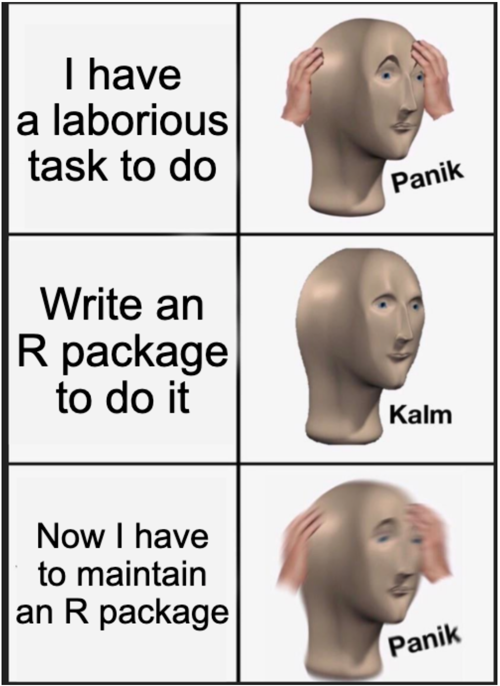

tl;dr
I wrote some slides to tell data scientists in the public sector what they already know: share the tools you’ve developed.
An axe to grind
I’m speaking today at an event for UK government data scientists with a theme of ‘the data science toolshed’. My plea is small: I want public sector workers to share the tools they make1.
We should build modular things like R packages that are easy to use and develop; make them available to everyone to minimise duplication and encourage collaboration; and maximise reach by telling everyone about it. This is how we improve quality and build our community. And save money for the taxpayer.
Handily, this is already expressed in the government’s Technology Code of Practice:
Share, reuse and collaborate: avoid duplicating effort and unnecessary costs by collaborating across government and sharing and reusing technology, data, and services.
I’ve had a small experience with this: I made the {a11ytables} R package to help producers of stats publications automate the creation of best-practice, accessible spreadsheets. It’s now being used in several organisations and is referenced from the government’s best-practice guidance.
Success? Maybe. But also PANIK: I’ve left the organisation where I made it; I was the sole developer; I worry that I should have thought about this sooner; that I should fork and update it; that updating users will be hard; that links to the old package will break; and so on. Hopefully people will learn something from these missteps.
Burying the hatchet
The slides are live on the internet and embedded below, or you can view the source on GitHub. Press s to pop out the speaker notes, o for a slide overview and f for fullscreen.
The slides were made with Revealjs via Quarto, because of course they were.
Clamp down
So, we should sustainabilise (not a word), centralise and advertise the useful things we make. Maybe we could have a list of tools we’ve produced collectively in the public sector? Something like an ‘Awesome’ list or a CRAN task view. Maybe that would make it easier to find and develop existing solutions instead of building from scratch all the time.
Build a toolshed. They will come?
Environment
Session info
Last rendered: 2023-07-17 18:03:30 BSTR version 4.3.1 (2023-06-16)
Platform: aarch64-apple-darwin20 (64-bit)
Running under: macOS Ventura 13.2.1
Matrix products: default
BLAS: /Library/Frameworks/R.framework/Versions/4.3-arm64/Resources/lib/libRblas.0.dylib
LAPACK: /Library/Frameworks/R.framework/Versions/4.3-arm64/Resources/lib/libRlapack.dylib; LAPACK version 3.11.0
locale:
[1] en_US.UTF-8/en_US.UTF-8/en_US.UTF-8/C/en_US.UTF-8/en_US.UTF-8
time zone: Europe/London
tzcode source: internal
attached base packages:
[1] stats graphics grDevices utils datasets methods base
loaded via a namespace (and not attached):
[1] htmlwidgets_1.6.2 compiler_4.3.1 fastmap_1.1.1
[4] cli_3.6.1 tools_4.3.1 htmltools_0.5.5
[7] xaringanExtra_0.7.0 rstudioapi_0.15.0 yaml_2.3.7
[10] rmarkdown_2.23 knitr_1.43.1 jsonlite_1.8.7
[13] xfun_0.39 digest_0.6.31 rlang_1.1.1
[16] evaluate_0.21 Footnotes
I get that it’s not always possible to share things because of sensitivity issues. If you can’t open it up to the world, then what’s the highest level that you can release it? Organisation, division, team? If you can’t share the tool, then what can you tell people about the experience of developing and using it?↩︎
Reuse
CC BY-NC-SA 4.0